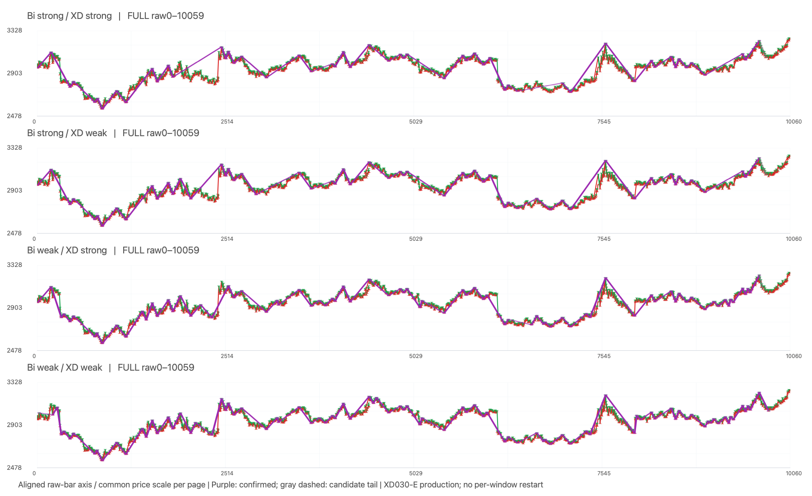

10,060 raw bars / 3,027 fractals. Default: weak Bi / weak Xianduan.

bi-weak_xd-weak interactive overview · PNG
bi-weak_xd-strong interactive overview · PNG
bi-strong_xd-weak interactive overview · PNG
bi-strong_xd-strong interactive overview · PNG